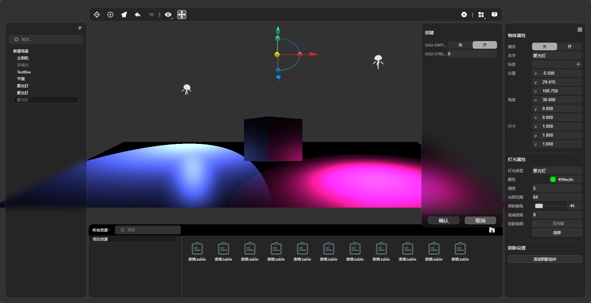
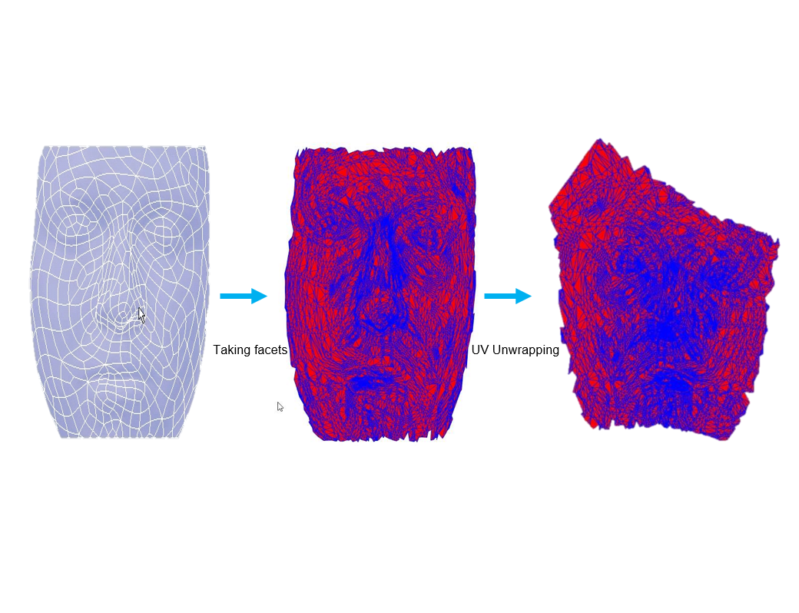
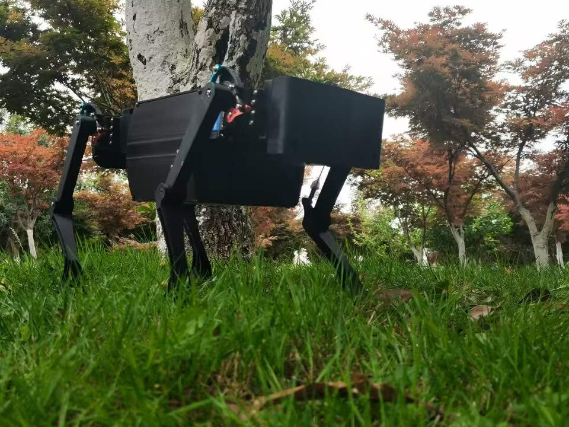

我目前在浙江大学，从事计算机图形学及其与互联网的交叉研究，包含web3D渲染、3D几何处理、digital twin等方向。 曾设计N-Alien机器人，对机器人上位软件架构、机器人集成电路、机器人运动控制算法、机器人力学结构设计均有较深研究。 科研期间接触数学梯度算符Nabla，觉得很美，故以此为英文名。
转动导航魔方，查看科研详情：
My Research

WebGI-全局照明渲染系统：web因其可扩展性和跨平台特性，在渲染行业具有巨大潜力，我们提出了新方法在web上渲染出带有全局照明效果的3D场景，同时把它部署到web系统上。

Web UV参数化系统：uv参数化是判断3D模型完整度的标志，在三维重建和渲染中起关键作用，我们考虑web特性，设计了WUVP系统及支持它运行的大型稀疏方程求解器。

N-Alien机器人：我从AI视觉系统、上位软件架构、运动控制算法、集成电路系统、机器人3D架构入手，创造了它，它具有远程GPS定位、AI视觉探测以及良好的运动能力。
My Awards
1 National Scholarship
Certification ID：BZK202054374
2 Invention Patent
Publication number：CN116630574A, "一种流形曲面模型有序边缘链快速求解方法",赵晓阳.etc
3 Utility Model Patent
Publication number：CN218317008U, "一种模块化四足机器人腿部结构",赵晓阳.etc